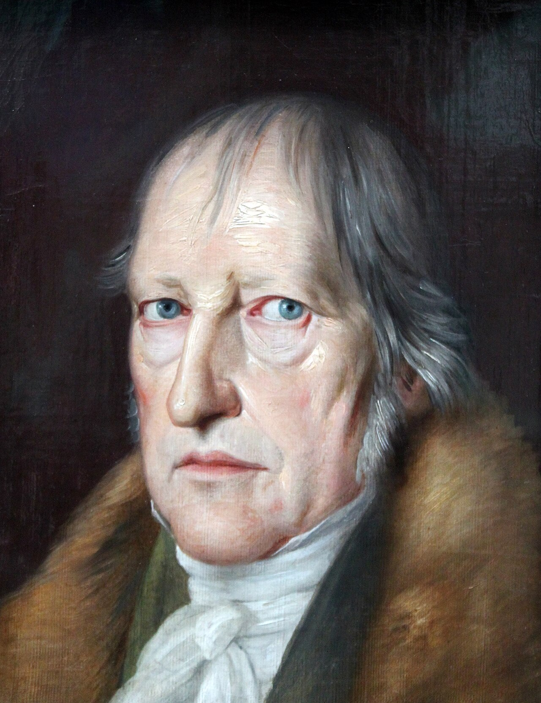

PART 2. 초기 매체론 · 3주차 상징성
매체를 없애려는 욕망과
매체는 없앨 수 없다는 발견
이미지 · 정신 · 가면 — 레싱 · 헤겔 · 니체
00이 주차의 위상
오늘부터 상징성 축이 시작됨. 2주차가 말과 글(물질성)이었다면, 오늘은 이미지와 언어(상징성)임.
레싱
이미지와 문자를 나눔- 매체마다 잘하는 것이 다름
헤겔
매체를 지우려 함- 물질을 벗을수록 높음
니체
언어 자체를 의심함- 언어는 이미 가면임
"매체를 없애려는 욕망"과
"매체는 없앨 수 없다는 발견"의 충돌.
"매체는 없앨 수 없다는 발견"의 충돌.
오늘 딱 하나만 가져간다면 이 문장.
01오늘 만날 개념
- 라오콘Laokoon
- 뱀에 감겨 죽는 트로이 사제를 조각한 고대 조각상. 바티칸 소장. 18세기 미학 논쟁의 최대 소재.
- 조형예술 · 시문학plastic art / poetry
- 조형예술은 조각·회화로 공간에 놓임. 시문학은 시·서사로 시간에 흐름.
- 미학aesthetics · aisthesis
- 아름다움과 예술에 관한 철학임. 어원은 그리스어 aisthesis = 감각. 원래 "감각에 관한 학문"이었음.
- 이념 · 형식 · 질료Idee / Form / Materie
- 헤겔 용어임. 조각으로 치면 — 이념은 표현하려는 정신, 형식은 인물의 자세, 질료는 대리석.
- 지양止揚 · Aufheben
- 없애면서 동시에 보존하며 더 높은 단계로 넘어가는 것. 애벌레가 나비가 될 때 애벌레는 없어지지만 그 몸은 나비 안에 있음.
- 가상Schein
- 겉으로 나타난 모습임. 헤겔에게는 극복할 것, 니체에게는 오히려 근본임.
- 아폴론적 · 디오니소스적apollinisch / dionysisch
- 니체의 두 원리. 질서·형식 대 도취·과잉임.
- 인격화prosopopoie
- 그리스어 prosopon(가면·얼굴) + poiein(만들다) = 가면을 만들기임.
- 구문분석parsing
- 문장을 문법 규칙에 따라 구조로 쪼개는 것임. 컴파일러와 자연어처리의 기초임.
02라오콘 논쟁

Wilfredor · CC0 · Wikimedia Commons
레싱의 『라오콘: 시문학과 회화의 경계에 관하여』(1766). 논쟁 상대는 빙켈만임.
빙켈만의 설명
정신의 문제- 그리스 예술의 "고귀한 단순함과 고요한 위대함" 때문임
- 즉 정신의 절제가 이유임
레싱의 반박
매체의 문제- 매체의 성질 때문임
- 조각은 한 순간을 영원히 고정함
- 입을 크게 벌린 순간을 고정하면 영원히 흉함
- 시에서는 비명을 질러도 됨. 한 순간에 머물지 않고 흘러가기 때문임
레싱의 결정적 이동 — 매체철학의 시작점
- 예술의 차이를 정신의 차이가 아니라 매체의 성질로 설명함.
- 이것이 "미디어는 메시지다"(맥루언, 9~10주차)의 먼 조상임.
- 처음으로 "무엇을 말하는가"가 아니라 "무엇으로 말하는가"를 물었음.
03두 질서 — 공간과 시간
| 구분 | 이미지 회화·조각 | 문자 시·서사 |
|---|---|---|
| 구조 | 공간과 현재 | 시간과 연속 |
| 성격 | 정적이고 지형 묘사적 | 시간적이고 선형적 |
| 라오콘 처리 | 한 순간을 한 관점에서 보여줌 | 과거에서 현재로 변해가는 과정을 서술함 |
| 잘하는 것 | 동시에 존재하는 것들의 배치 | 잇따라 일어나는 것들의 순서 |
레싱의 규범적 결론
- 시가 그림 흉내를 내면 안 됨. 장면의 현란한 묘사는 지양해야 함.
- 그림이 이야기 흉내를 내면 안 됨.
- 매체마다 고유한 대상을 정립해야 함. 두 매체는 양립 불가능함.
레싱이 옳았던 사례
- 소설을 영화로 옮기면 늘 내면 독백이 사라짐. 영화는 그것을 잘 못함.
- 영화를 소설로 옮기면 한 장면의 압도적 인상이 사라짐.
- 웹툰은 세로 스크롤로 시간을 공간에 밀어 넣었음 — 레싱의 두 질서를 섞은 것임.
레싱을 흔드는 사례
- 영화는 이미지인데 시간에 흐름 → 이미 레싱을 넘어섰음 4~5주차 벤야민
- 텍스트-이미지 생성은 시간적 지시(프롬프트)를 공간적 결과(이미지)로 바꿈.
- 동영상 생성은 시간과 공간을 한 프롬프트에서 동시에 만듦.
그런데 레싱의 진짜 물음은 따로 있음
"구분이 유지되는가"가 아님. "매체마다 잘하는 것이 다른가"임. 이 물음은 여전히 유효함. 스스로 물어볼 것 — AI로 만든 이미지가 못 하는 것은 무엇인가.
04헤겔 — 정신의 사다리

Jakob Schlesinger · Public domain · Wikimedia Commons
헤겔 미학의 뼈대 — 이성의 전체주의
- 자연미보다 예술미를 중시함.
- 자연이 아니라 정신. 현상이 아니라 묘사 방식. 자연 경험보다 사고와 담론.
- 예술의 내용 · 의미 · 상징을 중요시함.
왜 자연미보다 예술미인가
헤겔에게 아름다운 노을은 그냥 일어난 일임. 아무도 의도하지 않았음. 그런데 노을을 그린 그림에는 정신이 들어가 있음. 그래서 더 높음. "정신이 들어간 만큼 높다" — 이것이 헤겔 미학의 유일한 척도임.
창작 미학
- 질료보다 형상 창조를 중시함.
- 이념-형식은 본질적이고 소재-물질은 비본질적임.
- 생산 활동은 물질 안에 정신을 불어넣는 것임.
- 내적인 것이 외적인 매체에서 모습을 드러내는 방식으로 정신이 구현됨.
세 가지 정신 구현 방식과 위계
철학
가장 높음- 파악함 — 개념으로
종교
중간- 내면화함 — 표상으로
예술
가장 낮음- 미화함 — 감각으로
감각을 덜 쓸수록 높음.
예술 내부의 위계 — 물질을 덜 쓸수록 높음
건축가장 낮음
돌덩이 그 자체임
조각
돌이지만 형상이 있음
회화
평면과 물감. 부피를 벗음
음악
공기의 떨림뿐임
시
언어로만 되어 있음
비극가장 높음
언어와 정신. 물질이 가장 얇음
헤겔에게 물질은 걸림돌임
사다리를 올라갈수록 물질이 점점 얇아짐. 이것이 헤겔 미학의 방향임.
05예술의 종말
매체의 변증법
- 매체의 위치는 매개념(媒槪念)임 — 논리적 연결 고리.
- 부정성 — 과정에서는 역할을 하지만 결론에서 완전히 지양됨.
매체의 양가성 — 2주차 파르마콘의 헤겔판
- 정신 구현을 가능하게 하면서 동시에 훼손함.
- 예술은 이념에 모습을 만들어 주면서 동시에 이념에 죄를 지음.
- 형상화 과정에서 감성의 가상이 끼어들어 정신 구현을 방해함.
"매체가 물질성을 벗고 비물질적인 것에서 표명될 때
진정한 매체가 됨."
진정한 매체가 됨."
매체를 필요로 하지 않는 로고스의 완전한 순수성이 최종 단계임.
학기 최대의 대립 — 헤겔 대 키틀러
| 누구 | 주장 |
|---|---|
| 헤겔 | "매체가 물질성을 벗을 때 진정한 매체가 됨" |
| 키틀러 12주 | "소프트웨어는 없음." 모든 것은 결국 전압 차이와 하드웨어임 |
정확히 반대임. 어느 쪽이 옳은가.
판정 사례 — '클라우드'라는 말
- 이름은 헤겔 편임 — 구름, 비물질, 어디에도 없고 어디에나 있는 것.
- 실체는 키틀러 편임 — 데이터센터, 전력, 냉각수, 해저 케이블.
- → 이름 자체가 은폐의 기술임.
1주차 부정성과의 관계
- 1주차의 부정성 — "잘 작동하면 보이지 않음".
- 헤겔의 부정성 — 한 걸음 더 감. "결국 완전히 없어져야 함".
- → 헤겔은 매체를 없애고 싶어 한 철학자임.
06니체 — 아폴론과 디오니소스

Gustav-Adolf Schultze (d. 1897) · Public domain · Wikimedia Commons
헤겔에 대한 도전 — 매체사적 사건이 철학을 바꿈
- 배경은 19세기 사진 기술의 발명임. 물질성의 대량 복제가 가능해졌음.
- 작가·정신 중심의 이상적 예술관을 부정함.
- 사진이 없었으면 니체의 예술론도 달랐을 것임. "손으로 그려야만 예술"이라는 전제가 기계 앞에서 무너졌음.
- → 4~5주차 벤야민이 이 지점을 정면으로 이어받음.
미학의 원천은 예술적 형상화가 아니라 도취임.
아폴론적
질서의 원리- 법칙, 질서, 건축, 구성적인 것
- 예술 — 서사시, 조각, 현악기
- 잘 짜인 각본, 정확한 구도의 사진
디오니소스적
도취의 원리- 과도, 감정, 꿈, 통제를 벗어난 것
- 예술 — 무용, 음악(특히 관악기)
- 페스티벌의 군중, 즉흥 연주
그리스 비극 — 가면이 왜 중요한가
- 기원전 5세기 야외극장의 가면극임. 영웅의 활약과 고민, 파국적 결말.
- 두 원리가 함께 작동할 때 비극이 생김. 어느 하나만으로는 안 됨.
- 배우는 가면(prosopon)을 씀. 배우 개인이 사라지고 인물만 남음. 관객은 가면에 대고 욺.
- 니체는 이 구조를 언어 전체로 확장함. 다음 절이 그것임.
07언어라는 가면
언어학적 전회 — 오늘의 정점임.
| 주장 | 내용 |
|---|---|
| 인격화 prosopopoie | 가면(prosopon) + 만들다(poiein). 언어는 가면을 씌우는 일임. 사물에 이름을 붙이는 순간 그것에 가면을 씌운 것임 |
| 실재의 은폐 | 언어는 실재를 은폐하고 왜곡함. 세계를 있는 그대로 보여주는 창문이 아님 |
| 언어의 무기원성 | 언어는 진리에서 나오지 않았음. 수사학적 기술의 산물임 — 속임수, 아첨, 체면치레, 연기에서 나왔음 |
| 언어의 한계 | 차이 중심의 옮겨쓰기·바꿔쓰기. 지속적인 비유의 분화. 실재의 전체를 보여주지 못함 → 2주차 데리다의 차연 |
| 계몽주의의 착각 | 언어를 통한 진리 구현은 불가능함 |
"언어의 무기원성"을 이해하는 가장 쉬운 방법
- "나무"라는 말은 어디서 왔는가. 나무 자체에서? 아님.
- 세상에 똑같은 나무는 하나도 없음. 소나무, 벚나무, 죽은 나무, 어린 나무.
- 그 무수한 차이를 하나로 뭉뚱그린 것이 '나무'라는 말임.
- 즉 '나무'는 처음부터 비유임.
- 니체의 정의 — 진리란 "사람들이 그것이 비유임을 잊어버린 비유"임.
2주차와 대질할 것
- 플라톤 — 말은 참되고 글이 위험함.
- 니체 — 말 자체가 이미 가면임.
- 니체는 로고스중심주의의 뿌리를 자름.
- 데리다(2주차)는 니체의 이 자리에서 출발함.
08새로운 매체와 이미지
심혜련(2024) III부 1장 1절 「새로운 매체와 이미지 생산」 pp.269~275.
- 새로운 매체는 새로운 이미지 생산 방식을 만듦.
- 이미지의 생산 주체 · 생산 방식 · 존재 방식이 함께 바뀜.
- 중세까지 예술가가 쓸 수 있는 표현 도구는 극히 제한적이었음. 매체가 늘어나며 예술 자체가 바뀜.
오늘 세 사람과의 접점
| 누구 | 그의 문제 | 지금 어떻게 되는가 |
|---|---|---|
| 레싱 | 이미지와 문자의 경계 | 생성 AI에서 그 경계가 프롬프트 하나로 통과됨 |
| 헤겔 | 물질을 벗은 매체 | 이미지가 파일이 되었음. 헤겔의 소원이 이뤄진 것인가 |
| 니체 | 이미지도 가면인가 | 생성된 이미지는 무엇의 가면인가. 무엇도 아닌 것의 가면인가 |
마지막 물음이 11주차로 직행함
"무엇도 재현하지 않는 이미지"는 보드리야르의 원본 없는 복제임 11주차.
09구문분석과 언어철학
변정수(2025) 4부 1장 「구문분석 알고리즘과 언어철학」.
구문분석이란
- 문장을 문법 규칙에 따라 구조(파스 트리)로 쪼개는 것임.
- 예 — "나는 학교에 간다" → [주어: 나는] [부사구: 학교에] [서술어: 간다]
- 컴파일러와 자연어처리의 기초임. 의미를 다루기 전에 구조를 다룸.
파싱이 어려운 이유 — 중의성
- "나는 그를 망원경으로 보았다"
- ① 내가 망원경을 들고 그를 봤음.
- ② 망원경을 들고 있는 그를 봤음.
- 같은 문장이 두 개의 트리를 가짐. 구조만으로는 결정되지 않음.
철학적 연결 세 갈래
- 레싱과의 연결 파싱은 문장을 시간적 선형 구조(읽는 순서)에서 공간적 트리 구조(도표)로 바꿈. 레싱의 두 질서가 여기서 변환됨. 물음 — 그 변환에서 무엇이 남고 무엇이 사라지는가. 리듬은? 어조는?
- 헤겔과의 연결 파싱은 형식(구조)을 질료(음성·문자)에서 분리함. 헤겔의 소원이 이뤄진 것인가. 물음 — 구조만 남기면 의미도 남는가.
- 니체와의 연결 문법이 있으면 진리가 있는가. 니체는 "우리는 문법을 믿기 때문에 신을 버리지 못한다"고 함. 주어-술어 구조가 '주체'와 '속성'이라는 형이상학을 만듦. 예 — "비가 온다"에서 '비'는 무엇을 하고 있는가. 문법이 없는 주어를 만들어 낸 것 아닌가.
거대언어모델은 파싱하는가
- 고전적 자연어처리는 명시적 파스 트리를 만들었음.
- 트랜스포머 기반 모델은 명시적 구문 트리 없이 통계적 연관만으로 문장을 처리함.
- 그런데도 문법적으로 맞는 문장을 냄.
오늘의 결정적 질문
문법 규칙 없이 문법적인 문장을 만드는 기계는, 언어를 아는가.
- 니체 편의 답 — 애초에 문법은 규칙이 아니라 관습적 비유가 굳은 형태였음. 이 기계는 니체가 옳았음을 보여줌.
- 헤겔 편의 답 — 아님. 구조 없이 나온 것은 가상(Schein)일 뿐 개념이 아님.
- → 환각(hallucination) 논쟁이 정확히 이 자리에 있음.
10정리 · 흔한 오해 · 토론
이번 주 개념 다섯
- 레싱의 두 질서 이미지는 공간·정적, 문자는 시간·선형. 매체마다 잘하는 것이 다름.
- 지양(Aufheben) 없애면서 보존하며 더 높은 단계로. 헤겔에게 매체는 결국 지양됨.
- 예술의 종말 매체가 물질성을 벗을 때 진정한 매체가 된다는 헤겔의 테제임.
- 인격화(prosopopoie) 언어는 가면을 만드는 일임.
- 언어의 무기원성 언어는 진리가 아니라 수사학적 기술의 산물임.
흔한 오해 셋
오해 1 — "예술의 종말 = 예술이 없어진다"
- 교정 — 헤겔은 예술이 사라진다고 하지 않았음.
- 예술이 정신 구현의 최고 형태이기를 그친다고 했음. 그 자리를 철학이 대신한다는 뜻임.
오해 2 — "니체는 언어를 부정했다"
- 교정 — 니체는 언어를 버리자고 하지 않았음.
- 언어가 진리를 담보하지 못한다고 했음. 그러면서 누구보다 언어를 공들여 썼음.
오해 3 — "아폴론적이 좋고 디오니소스적이 나쁘다"
- 교정 — 니체는 둘의 결합에서 비극이 나온다고 봄. 어느 한쪽 편들기가 아님.
토론 질문
- 텍스트에서 이미지를 생성하는 일은 레싱의 시간/공간 구분을 무효화하는가.
프롬프트(시간적·선형적)가 이미지(공간적·정적)를 만듦. 레싱의 "양립 불가능"은 어디로 갔는가. 동영상 생성은 이 구분에 무엇을 더하는가. 그리고 여전히 유효한 물음 — AI 이미지가 못 하는 것은 무엇인가. - 헤겔의 "매체가 물질성을 벗을 때 진정한 매체가 된다"를 키틀러의 "소프트웨어는 없다"와 충돌시켜 볼 것.
어느 쪽이 옳은가. '클라우드'라는 말은 어느 편의 언어인가. - 니체의 "언어의 무기원성"은 환각 논쟁에 어떻게 개입하는가.
환각을 오류라고 부르려면 언어가 진리를 담을 수 있다는 전제가 필요함. 니체가 옳다면 환각은 버그가 아니라 언어의 본성인가. - 헤겔의 위계를 오늘의 매체로 다시 그리면 어떻게 되는가.
글 > 이미지 > 영상 > 게임? 이 위계에 동의하는가. - 생성된 이미지는 무엇을 재현하는가.
재현하는 것이 없다면 그것은 여전히 이미지인가.
11참고자료
이번 주 읽기
- A 메르쉬 (2009). 『매체이론』 — 2장
- C 심혜련 (2024). 『21세기의 매체철학』 — III부 1장 1절 pp.269~275
- D 변정수 (2025). 『알고리즘으로 철학하기』 — 4부 1장
논문
- 이화진 (2021). GE 레싱의 「라오콘」과 회화의 시공간. 『인문과학연구논총』, 42(2), 223–248.
- 김현 (2007). 논리적 가상과 예술적 가상. 『철학논총』, 49, 75–92.
- 김종기 (2012). 카타르시스에서 디오니소스적 긍정으로. 『민족미학』, 11(1), 103–149.
원전
- 레싱. 『라오콘: 시문학과 회화의 경계에 관하여』 — 서문과 1~3장만
- 헤겔. 『미학 강의』 — 서론 부분
- 니체. 『비극의 탄생』 — 1~5절
- 니체. 「비도덕적 의미에서의 진리와 거짓에 관하여」 짧고 학부생에게 잘 읽힘
이어지는 주차
- 4~5주차 — 발터 벤야민: 기술복제와 아우라 물질성
니체가 열어둔 사진과 복제의 문제를 정면으로 이어받음.